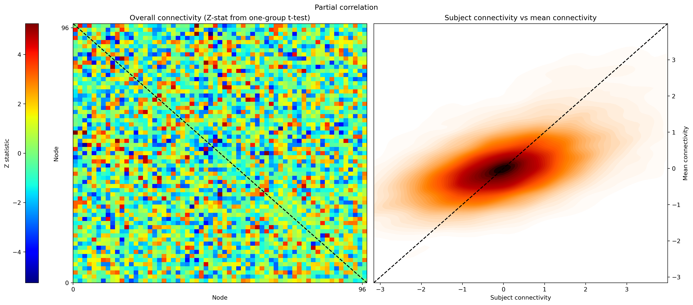

Resting state with FSLnets#
This interactive demonstration is based on the official FSL course “Resting state FSLnets practical”.
FSLnets is a toolbox for analyzing brain network connectivity from fMRI time series, typically derived from resting-state data. It takes as input the timecourses from specific brain regions, usually obtained via group-ICA and dual regression, and computes subject-level connectivity matrices using full or partial correlations. These network matrices can then be used for statistical comparisons across subjects or groups.
Author: Monika Doerig
Date: 30 July 2025
License:
Note: If this notebook uses neuroimaging tools from Neurocontainers, those tools retain their original licenses. Please see Neurodesk citation guidelines for details.
Citation and Resources:#
Tools included in this workflow#
FSL/ FSLnets:
M. Jenkinson, C.F. Beckmann, T.E. Behrens, M.W. Woolrich, S.M. Smith. FSL. NeuroImage, 62:782-90, 2012. https://doi.org/10.1016/j.neuroimage.2011.09.015
Smith SM, Beckmann CF, Auerbach EJ, et al. (2013). Resting-state fMRI in the Human Connectome Project. NeuroImage, 80, 144–168. https://doi.org/10.1016/j.neuroimage.2013.05.039
Educational resources#
Dataset#
Introduction to FSLnets#
FSLnets enables network modeling of fMRI data by analyzing the temporal relationships between brain regions. It is particularly useful for group-level studies of functional connectivity, where the goal is to identify differences or commonalities in brain network organization
The typical FSLnets pipeline includes:
Extracting subject-level timeseries spatial node maps (e.g., dual regression outputs)
Identifying and removing structured noise components from the data
Computing full or partial correlation matrices (netmats) for each subject
Exploring group-average connectivity patterns and hierarchical node clustering
Performing statistical comparisons of connectivity across subjects or group
(Optional) Conducting multivariate cross-subject analysis, which uses the full network matrix to classify or differentiate groups (e.g., patients vs. controls) using machine learning techniques like linear discriminant analysis (LDA), support vector machines (SVM), or random forests
This notebook guides you through the core steps of network analysis: estimating connectivity matrices, comparing them across groups, and visualizing the results.
For a full pipeline and detailed information about the steps, refer to the complete Resting state FSLnets practical.
Load FSL and Import Python libraries#
import module
await module.load('fsl/6.0.7.16')
await module.list()
['fsl/6.0.7.16']
import subprocess
from IPython.display import Image, Markdown
import numpy as np
Download course material#
⚠️ Download and runtime note: The cell below streams a large FSL dataset (~15 GB) and will take 5–15 minutes depending on your connection and resources. The data cannot be partially downloaded due to the FSL tarball format, but extraction is optimized to avoid writing the full archive to disk. Similarly, some of the subsequent processing cells may also take several minutes to run. Feel free to read ahead while cells are running.
![ -d fsl_course_data/rest/Nets ] || wget -O- https://fsl.fmrib.ox.ac.uk/fslcourse/downloads/rest.tar.gz \
| tar -xzv --touch \
'fsl_course_data/rest/Nets/groupICA100.dr' \
'fsl_course_data/rest/Nets/groupICA100.sum' \
'fsl_course_data/rest/Nets/design/unpaired_ttest_1con.mat' \
'fsl_course_data/rest/Nets/design/unpaired_ttest_1con.con'
--2026-03-08 06:28:57-- https://fsl.fmrib.ox.ac.uk/fslcourse/downloads/rest.tar.gz
Resolving fsl.fmrib.ox.ac.uk (fsl.fmrib.ox.ac.uk)... 129.67.248.66
Connecting to fsl.fmrib.ox.ac.uk (fsl.fmrib.ox.ac.uk)|129.67.248.66|:443... connected.
HTTP request sent, awaiting response... 200 OK
Length: 15935669577 (15G) [application/x-gzip]
Saving to: ‘STDOUT’
- 4%[ ] 670.39M 93.8MB/s eta 2m 37s fsl_course_data/rest/Nets/design/unpaired_ttest_1con.con
fsl_course_data/rest/Nets/design/unpaired_ttest_1con.mat
fsl_course_data/rest/Nets/groupICA100.dr/
fsl_course_data/rest/Nets/groupICA100.dr/dr_stage1_subject00010.txt
fsl_course_data/rest/Nets/groupICA100.dr/dr_stage1_subject00006.txt
fsl_course_data/rest/Nets/groupICA100.dr/dr_stage1_subject00001.txt
fsl_course_data/rest/Nets/groupICA100.dr/dr_stage1_subject00008.txt
fsl_course_data/rest/Nets/groupICA100.dr/maskALL.nii.gz
fsl_course_data/rest/Nets/groupICA100.dr/dr_stage1_subject00011.txt
fsl_course_data/rest/Nets/groupICA100.dr/scripts+logs/
fsl_course_data/rest/Nets/groupICA100.dr/scripts+logs/drD.e4455734.6
fsl_course_data/rest/Nets/groupICA100.dr/scripts+logs/drA.e4455710.10
fsl_course_data/rest/Nets/groupICA100.dr/scripts+logs/drD.e4455734.13
fsl_course_data/rest/Nets/groupICA100.dr/scripts+logs/drD.e4455734.64
fsl_course_data/rest/Nets/groupICA100.dr/scripts+logs/drD.o4455734.31
fsl_course_data/rest/Nets/groupICA100.dr/scripts+logs/drD.e4455734.80
fsl_course_data/rest/Nets/groupICA100.dr/scripts+logs/drD.o4455734.46
fsl_course_data/rest/Nets/groupICA100.dr/scripts+logs/drD.e4455734.19
fsl_course_data/rest/Nets/groupICA100.dr/scripts+logs/drC.e4455715.1
fsl_course_data/rest/Nets/groupICA100.dr/scripts+logs/drC.o4455715.7
fsl_course_data/rest/Nets/groupICA100.dr/scripts+logs/drA.o4455710.1
fsl_course_data/rest/Nets/groupICA100.dr/scripts+logs/drA.e4455710.7
fsl_course_data/rest/Nets/groupICA100.dr/scripts+logs/drD.o4455734.90
fsl_course_data/rest/Nets/groupICA100.dr/scripts+logs/drD.e4455734.56
fsl_course_data/rest/Nets/groupICA100.dr/scripts+logs/drD.e4455734.21
fsl_course_data/rest/Nets/groupICA100.dr/scripts+logs/drD.o4455734.74
fsl_course_data/rest/Nets/groupICA100.dr/scripts+logs/drD.o4455734.22
fsl_course_data/rest/Nets/groupICA100.dr/scripts+logs/drD.o4455734.55
fsl_course_data/rest/Nets/groupICA100.dr/scripts+logs/drD.e4455734.93
fsl_course_data/rest/Nets/groupICA100.dr/scripts+logs/drD.e4455734.77
fsl_course_data/rest/Nets/groupICA100.dr/scripts+logs/drD.e4455734.99
fsl_course_data/rest/Nets/groupICA100.dr/scripts+logs/drD.o4455734.28
fsl_course_data/rest/Nets/groupICA100.dr/scripts+logs/drD.e4455734.38
fsl_course_data/rest/Nets/groupICA100.dr/scripts+logs/drD.o4455734.89
fsl_course_data/rest/Nets/groupICA100.dr/scripts+logs/drD.o4455734.67
fsl_course_data/rest/Nets/groupICA100.dr/scripts+logs/drD.o4455734.10
fsl_course_data/rest/Nets/groupICA100.dr/scripts+logs/drD.e4455734.45
fsl_course_data/rest/Nets/groupICA100.dr/scripts+logs/drD.o4455734.83
fsl_course_data/rest/Nets/groupICA100.dr/scripts+logs/drD.e4455734.32
fsl_course_data/rest/Nets/groupICA100.dr/scripts+logs/drC.o4455715.10
fsl_course_data/rest/Nets/groupICA100.dr/scripts+logs/drD.o4455734.17
fsl_course_data/rest/Nets/groupICA100.dr/scripts+logs/drD.o4455734.60
fsl_course_data/rest/Nets/groupICA100.dr/scripts+logs/drD.e4455734.48
fsl_course_data/rest/Nets/groupICA100.dr/scripts+logs/drD.e4455734.35
fsl_course_data/rest/Nets/groupICA100.dr/scripts+logs/drD.o4455734.84
fsl_course_data/rest/Nets/groupICA100.dr/scripts+logs/drD.e4455734.42
fsl_course_data/rest/Nets/groupICA100.dr/scripts+logs/drD.e4455734.94
fsl_course_data/rest/Nets/groupICA100.dr/scripts+logs/drD.o4455734.52
fsl_course_data/rest/Nets/groupICA100.dr/scripts+logs/drD.o4455734.25
fsl_course_data/rest/Nets/groupICA100.dr/scripts+logs/drD.o4455734.58
fsl_course_data/rest/Nets/groupICA100.dr/scripts+logs/drD.e4455734.70
fsl_course_data/rest/Nets/groupICA100.dr/scripts+logs/drA.o4455710.6
fsl_course_data/rest/Nets/groupICA100.dr/scripts+logs/drD.e4455734.26
fsl_course_data/rest/Nets/groupICA100.dr/scripts+logs/drD.e4455734.51
fsl_course_data/rest/Nets/groupICA100.dr/scripts+logs/drD.o4455734.97
fsl_course_data/rest/Nets/groupICA100.dr/scripts+logs/drD.o4455734.79
fsl_course_data/rest/Nets/groupICA100.dr/scripts+logs/drD.o4455734.73
fsl_course_data/rest/Nets/groupICA100.dr/scripts+logs/drC.e4455715.6
fsl_course_data/rest/Nets/groupICA100.dr/scripts+logs/drD.e4455734.63
fsl_course_data/rest/Nets/groupICA100.dr/scripts+logs/drD.e4455734.14
fsl_course_data/rest/Nets/groupICA100.dr/scripts+logs/drD.e4455734.69
fsl_course_data/rest/Nets/groupICA100.dr/scripts+logs/drD.o4455734.41
fsl_course_data/rest/Nets/groupICA100.dr/scripts+logs/drD.e4455734.87
fsl_course_data/rest/Nets/groupICA100.dr/scripts+logs/drD.o4455734.36
fsl_course_data/rest/Nets/groupICA100.dr/scripts+logs/drD.e4455734.1
fsl_course_data/rest/Nets/groupICA100.dr/scripts+logs/drD.o4455734.7
fsl_course_data/rest/Nets/groupICA100.dr/scripts+logs/drD.o4455734.45
fsl_course_data/rest/Nets/groupICA100.dr/scripts+logs/drD.e4455734.83
fsl_course_data/rest/Nets/groupICA100.dr/scripts+logs/drD.o4455734.32
fsl_course_data/rest/Nets/groupICA100.dr/scripts+logs/drC.e4455715.10
fsl_course_data/rest/Nets/groupICA100.dr/scripts+logs/drD.o4455734.38
fsl_course_data/rest/Nets/groupICA100.dr/scripts+logs/drD.e4455734.89
fsl_course_data/rest/Nets/groupICA100.dr/scripts+logs/drD.e4455734.67
fsl_course_data/rest/Nets/groupICA100.dr/scripts+logs/drD.e4455734.10
fsl_course_data/rest/Nets/groupICA100.dr/scripts+logs/drD.o4455734.9
fsl_course_data/rest/Nets/groupICA100.dr/scripts+logs/drD.o4455734.3
fsl_course_data/rest/Nets/groupICA100.dr/scripts+logs/drD.e4455734.5
fsl_course_data/rest/Nets/groupICA100.dr/scripts+logs/drA.o4455710.8
fsl_course_data/rest/Nets/groupICA100.dr/scripts+logs/drD.o4455734.77
fsl_course_data/rest/Nets/groupICA100.dr/scripts+logs/drD.o4455734.99
fsl_course_data/rest/Nets/groupICA100.dr/scripts+logs/drD.e4455734.28
fsl_course_data/rest/Nets/groupICA100.dr/scripts+logs/drD.e4455734.22
fsl_course_data/rest/Nets/groupICA100.dr/scripts+logs/drD.e4455734.55
fsl_course_data/rest/Nets/groupICA100.dr/scripts+logs/drD.o4455734.93
fsl_course_data/rest/Nets/groupICA100.dr/scripts+logs/drA.e4455710.4
fsl_course_data/rest/Nets/groupICA100.dr/scripts+logs/drB.o4455712
fsl_course_data/rest/Nets/groupICA100.dr/scripts+logs/drA.o4455710.2
fsl_course_data/rest/Nets/groupICA100.dr/scripts+logs/drC
fsl_course_data/rest/Nets/groupICA100.dr/scripts+logs/drC.o4455715.4
fsl_course_data/rest/Nets/groupICA100.dr/scripts+logs/drC.e4455715.2
fsl_course_data/rest/Nets/groupICA100.dr/scripts+logs/drC.e4455715.8
fsl_course_data/rest/Nets/groupICA100.dr/scripts+logs/drD.e4455734.74
fsl_course_data/rest/Nets/groupICA100.dr/scripts+logs/drD.e4455734.90
fsl_course_data/rest/Nets/groupICA100.dr/scripts+logs/drD.o4455734.56
fsl_course_data/rest/Nets/groupICA100.dr/scripts+logs/drD.o4455734.21
fsl_course_data/rest/Nets/groupICA100.dr/scripts+logs/drD.e4455734.31
fsl_course_data/rest/Nets/groupICA100.dr/scripts+logs/drD.o4455734.80
fsl_course_data/rest/Nets/groupICA100.dr/scripts+logs/drD.e4455734.46
fsl_course_data/rest/Nets/groupICA100.dr/scripts+logs/drD.o4455734.19
fsl_course_data/rest/Nets/groupICA100.dr/scripts+logs/drD.o4455734.13
fsl_course_data/rest/Nets/groupICA100.dr/scripts+logs/drD.o4455734.64
fsl_course_data/rest/Nets/groupICA100.dr/scripts+logs/drA.o4455710.10
fsl_course_data/rest/Nets/groupICA100.dr/scripts+logs/drD.o4455734.69
fsl_course_data/rest/Nets/groupICA100.dr/scripts+logs/drD.e4455734.41
fsl_course_data/rest/Nets/groupICA100.dr/scripts+logs/drD.o4455734.87
fsl_course_data/rest/Nets/groupICA100.dr/scripts+logs/drD.e4455734.36
fsl_course_data/rest/Nets/groupICA100.dr/scripts+logs/drD.o4455734.63
fsl_course_data/rest/Nets/groupICA100.dr/scripts+logs/drD.o4455734.14
fsl_course_data/rest/Nets/groupICA100.dr/scripts+logs/drD.e4455734.73
fsl_course_data/rest/Nets/groupICA100.dr/scripts+logs/drD.o4455734.26
fsl_course_data/rest/Nets/groupICA100.dr/scripts+logs/drD.o4455734.51
fsl_course_data/rest/Nets/groupICA100.dr/scripts+logs/drD.e4455734.97
fsl_course_data/rest/Nets/groupICA100.dr/scripts+logs/drD.e4455734.79
fsl_course_data/rest/Nets/groupICA100.dr/scripts+logs/drD
fsl_course_data/rest/Nets/groupICA100.dr/scripts+logs/drC.o4455715.3
fsl_course_data/rest/Nets/groupICA100.dr/scripts+logs/drC.e4455715.5
fsl_course_data/rest/Nets/groupICA100.dr/scripts+logs/drC.o4455715.9
fsl_course_data/rest/Nets/groupICA100.dr/scripts+logs/drA.e4455710.9
fsl_course_data/rest/Nets/groupICA100.dr/scripts+logs/drD.e4455734.58
fsl_course_data/rest/Nets/groupICA100.dr/scripts+logs/drD.o4455734.70
fsl_course_data/rest/Nets/groupICA100.dr/scripts+logs/drD.o4455734.94
fsl_course_data/rest/Nets/groupICA100.dr/scripts+logs/drD.e4455734.52
fsl_course_data/rest/Nets/groupICA100.dr/scripts+logs/drD.e4455734.25
fsl_course_data/rest/Nets/groupICA100.dr/scripts+logs/drA.e4455710.3
fsl_course_data/rest/Nets/groupICA100.dr/scripts+logs/drA.o4455710.5
fsl_course_data/rest/Nets/groupICA100.dr/scripts+logs/drD.e4455734.100
fsl_course_data/rest/Nets/groupICA100.dr/scripts+logs/drD.e4455734.8
fsl_course_data/rest/Nets/groupICA100.dr/scripts+logs/drD.o4455734.4
fsl_course_data/rest/Nets/groupICA100.dr/scripts+logs/drD.e4455734.2
fsl_course_data/rest/Nets/groupICA100.dr/scripts+logs/drD.o4455734.35
fsl_course_data/rest/Nets/groupICA100.dr/scripts+logs/drD.e4455734.84
fsl_course_data/rest/Nets/groupICA100.dr/scripts+logs/drD.o4455734.42
fsl_course_data/rest/Nets/groupICA100.dr/scripts+logs/drD.e4455734.17
fsl_course_data/rest/Nets/groupICA100.dr/scripts+logs/drD.e4455734.60
fsl_course_data/rest/Nets/groupICA100.dr/scripts+logs/drD.o4455734.48
fsl_course_data/rest/Nets/groupICA100.dr/scripts+logs/drD.o4455734.72
fsl_course_data/rest/Nets/groupICA100.dr/scripts+logs/drD.o4455734.96
fsl_course_data/rest/Nets/groupICA100.dr/scripts+logs/drD.e4455734.50
fsl_course_data/rest/Nets/groupICA100.dr/scripts+logs/drD.e4455734.27
fsl_course_data/rest/Nets/groupICA100.dr/scripts+logs/drD.o4455734.78
fsl_course_data/rest/Nets/groupICA100.dr/scripts+logs/drA.o4455710.7
fsl_course_data/rest/Nets/groupICA100.dr/scripts+logs/drA.e4455710.1
fsl_course_data/rest/Nets/groupICA100.dr/scripts+logs/drC.e4455715.7
fsl_course_data/rest/Nets/groupICA100.dr/scripts+logs/drC.o4455715.1
fsl_course_data/rest/Nets/groupICA100.dr/scripts+logs/drD.e4455734.68
fsl_course_data/rest/Nets/groupICA100.dr/scripts+logs/drD.o4455734.37
fsl_course_data/rest/Nets/groupICA100.dr/scripts+logs/drD.e4455734.86
fsl_course_data/rest/Nets/groupICA100.dr/scripts+logs/drD.o4455734.40
fsl_course_data/rest/Nets/groupICA100.dr/scripts+logs/drD.e4455734.15
fsl_course_data/rest/Nets/groupICA100.dr/scripts+logs/drD.e4455734.62
fsl_course_data/rest/Nets/groupICA100.dr/scripts+logs/drD.o4455734.100
fsl_course_data/rest/Nets/groupICA100.dr/scripts+logs/drD.o4455734.6
fsl_course_data/rest/Nets/groupICA100.dr/scripts+logs/drD.e4455734.43
fsl_course_data/rest/Nets/groupICA100.dr/scripts+logs/drD.o4455734.85
fsl_course_data/rest/Nets/groupICA100.dr/scripts+logs/drD.e4455734.34
fsl_course_data/rest/Nets/groupICA100.dr/scripts+logs/drD.o4455734.61
fsl_course_data/rest/Nets/groupICA100.dr/scripts+logs/drD.o4455734.16
fsl_course_data/rest/Nets/groupICA100.dr/scripts+logs/drD.e4455734.49
fsl_course_data/rest/Nets/groupICA100.dr/scripts+logs/drD.o4455734.59
fsl_course_data/rest/Nets/groupICA100.dr/scripts+logs/drD.e4455734.71
fsl_course_data/rest/Nets/groupICA100.dr/scripts+logs/drD.o4455734.24
fsl_course_data/rest/Nets/groupICA100.dr/scripts+logs/drD.o4455734.53
fsl_course_data/rest/Nets/groupICA100.dr/scripts+logs/drD.e4455734.95
fsl_course_data/rest/Nets/groupICA100.dr/scripts+logs/drD.e4455734.76
fsl_course_data/rest/Nets/groupICA100.dr/scripts+logs/drD.o4455734.29
fsl_course_data/rest/Nets/groupICA100.dr/scripts+logs/drD.e4455734.98
fsl_course_data/rest/Nets/groupICA100.dr/scripts+logs/drD.e4455734.92
fsl_course_data/rest/Nets/groupICA100.dr/scripts+logs/drD.o4455734.54
fsl_course_data/rest/Nets/groupICA100.dr/scripts+logs/drD.o4455734.23
fsl_course_data/rest/Nets/groupICA100.dr/scripts+logs/drA.o4455710.12
fsl_course_data/rest/Nets/groupICA100.dr/scripts+logs/drC.o4455715.11
fsl_course_data/rest/Nets/groupICA100.dr/scripts+logs/drD.e4455734.33
fsl_course_data/rest/Nets/groupICA100.dr/scripts+logs/drD.o4455734.82
fsl_course_data/rest/Nets/groupICA100.dr/scripts+logs/drD.e4455734.44
fsl_course_data/rest/Nets/groupICA100.dr/scripts+logs/drD.o4455734.88
fsl_course_data/rest/Nets/groupICA100.dr/scripts+logs/drD.e4455734.39
fsl_course_data/rest/Nets/groupICA100.dr/scripts+logs/drD.o4455734.11
fsl_course_data/rest/Nets/groupICA100.dr/scripts+logs/drD.o4455734.66
fsl_course_data/rest/Nets/groupICA100.dr/scripts+logs/drA.e4455710.11
fsl_course_data/rest/Nets/groupICA100.dr/scripts+logs/drD.e4455734.7
fsl_course_data/rest/Nets/groupICA100.dr/scripts+logs/drD.o4455734.1
fsl_course_data/rest/Nets/groupICA100.dr/scripts+logs/command
fsl_course_data/rest/Nets/groupICA100.dr/scripts+logs/drD.o4455734.47
fsl_course_data/rest/Nets/groupICA100.dr/scripts+logs/drD.e4455734.81
fsl_course_data/rest/Nets/groupICA100.dr/scripts+logs/drD.o4455734.30
fsl_course_data/rest/Nets/groupICA100.dr/scripts+logs/drD.e4455734.18
fsl_course_data/rest/Nets/groupICA100.dr/scripts+logs/drC.e4455715.12
fsl_course_data/rest/Nets/groupICA100.dr/scripts+logs/drD.e4455734.65
fsl_course_data/rest/Nets/groupICA100.dr/scripts+logs/drD.e4455734.12
fsl_course_data/rest/Nets/groupICA100.dr/scripts+logs/drA
fsl_course_data/rest/Nets/groupICA100.dr/scripts+logs/drC.o4455715.6
fsl_course_data/rest/Nets/groupICA100.dr/scripts+logs/drD.o4455734.75
fsl_course_data/rest/Nets/groupICA100.dr/scripts+logs/drD.e4455734.20
fsl_course_data/rest/Nets/groupICA100.dr/scripts+logs/drD.e4455734.57
fsl_course_data/rest/Nets/groupICA100.dr/scripts+logs/drD.o4455734.91
fsl_course_data/rest/Nets/groupICA100.dr/scripts+logs/drA.e4455710.6
fsl_course_data/rest/Nets/groupICA100.dr/scripts+logs/drC.o4455715.8
fsl_course_data/rest/Nets/groupICA100.dr/scripts+logs/drC.o4455715.2
fsl_course_data/rest/Nets/groupICA100.dr/scripts+logs/drC.e4455715.4
fsl_course_data/rest/Nets/groupICA100.dr/scripts+logs/drA.e4455710.2
fsl_course_data/rest/Nets/groupICA100.dr/scripts+logs/drA.o4455710.4
fsl_course_data/rest/Nets/groupICA100.dr/scripts+logs/drD.e4455734.24
fsl_course_data/rest/Nets/groupICA100.dr/scripts+logs/drD.e4455734.53
fsl_course_data/rest/Nets/groupICA100.dr/scripts+logs/drD.o4455734.95
fsl_course_data/rest/Nets/groupICA100.dr/scripts+logs/drD.e4455734.59
fsl_course_data/rest/Nets/groupICA100.dr/scripts+logs/drD.o4455734.71
fsl_course_data/rest/Nets/groupICA100.dr/scripts+logs/drA.e4455710.8
fsl_course_data/rest/Nets/groupICA100.dr/scripts+logs/drD.o4455734.5
fsl_course_data/rest/Nets/groupICA100.dr/scripts+logs/drD.e4455734.3
fsl_course_data/rest/Nets/groupICA100.dr/scripts+logs/drD.e4455734.9
fsl_course_data/rest/Nets/groupICA100.dr/scripts+logs/drD.e4455734.61
fsl_course_data/rest/Nets/groupICA100.dr/scripts+logs/drD.e4455734.16
fsl_course_data/rest/Nets/groupICA100.dr/scripts+logs/drD.o4455734.49
fsl_course_data/rest/Nets/groupICA100.dr/scripts+logs/drD.o4455734.43
fsl_course_data/rest/Nets/groupICA100.dr/scripts+logs/drD.e4455734.85
fsl_course_data/rest/Nets/groupICA100.dr/scripts+logs/drD.o4455734.34
fsl_course_data/rest/Nets/groupICA100.dr/scripts+logs/drD.o4455734.15
fsl_course_data/rest/Nets/groupICA100.dr/scripts+logs/drD.o4455734.62
fsl_course_data/rest/Nets/groupICA100.dr/scripts+logs/drD.o4455734.68
fsl_course_data/rest/Nets/groupICA100.dr/scripts+logs/drD.e4455734.37
fsl_course_data/rest/Nets/groupICA100.dr/scripts+logs/drD.o4455734.86
fsl_course_data/rest/Nets/groupICA100.dr/scripts+logs/drD.e4455734.40
fsl_course_data/rest/Nets/groupICA100.dr/scripts+logs/drD.e4455734.96
fsl_course_data/rest/Nets/groupICA100.dr/scripts+logs/drD.o4455734.50
fsl_course_data/rest/Nets/groupICA100.dr/scripts+logs/drD.o4455734.27
fsl_course_data/rest/Nets/groupICA100.dr/scripts+logs/drD.e4455734.78
fsl_course_data/rest/Nets/groupICA100.dr/scripts+logs/drD.e4455734.72
fsl_course_data/rest/Nets/groupICA100.dr/scripts+logs/drD.o4455734.20
fsl_course_data/rest/Nets/groupICA100.dr/scripts+logs/drD.o4455734.57
fsl_course_data/rest/Nets/groupICA100.dr/scripts+logs/drD.e4455734.91
fsl_course_data/rest/Nets/groupICA100.dr/scripts+logs/drD.e4455734.75
fsl_course_data/rest/Nets/groupICA100.dr/scripts+logs/drD.o4455734.65
fsl_course_data/rest/Nets/groupICA100.dr/scripts+logs/drD.o4455734.12
fsl_course_data/rest/Nets/groupICA100.dr/scripts+logs/drD.e4455734.47
fsl_course_data/rest/Nets/groupICA100.dr/scripts+logs/drD.o4455734.81
fsl_course_data/rest/Nets/groupICA100.dr/scripts+logs/drD.e4455734.30
fsl_course_data/rest/Nets/groupICA100.dr/scripts+logs/drD.o4455734.18
fsl_course_data/rest/Nets/groupICA100.dr/scripts+logs/drC.o4455715.12
fsl_course_data/rest/Nets/groupICA100.dr/scripts+logs/drA.o4455710.11
fsl_course_data/rest/Nets/groupICA100.dr/scripts+logs/drD.e4455734.88
fsl_course_data/rest/Nets/groupICA100.dr/scripts+logs/drD.o4455734.39
fsl_course_data/rest/Nets/groupICA100.dr/scripts+logs/drD.e4455734.11
fsl_course_data/rest/Nets/groupICA100.dr/scripts+logs/drD.e4455734.66
fsl_course_data/rest/Nets/groupICA100.dr/scripts+logs/drB.e4455712
fsl_course_data/rest/Nets/groupICA100.dr/scripts+logs/drC.e4455715.11
fsl_course_data/rest/Nets/groupICA100.dr/scripts+logs/drD.o4455734.33
fsl_course_data/rest/Nets/groupICA100.dr/scripts+logs/drD.e4455734.82
fsl_course_data/rest/Nets/groupICA100.dr/scripts+logs/drD.o4455734.44
fsl_course_data/rest/Nets/groupICA100.dr/scripts+logs/drD.o4455734.2
fsl_course_data/rest/Nets/groupICA100.dr/scripts+logs/drD.e4455734.4
fsl_course_data/rest/Nets/groupICA100.dr/scripts+logs/drD.o4455734.8
fsl_course_data/rest/Nets/groupICA100.dr/scripts+logs/drA.e4455710.12
fsl_course_data/rest/Nets/groupICA100.dr/scripts+logs/drA.e4455710.5
fsl_course_data/rest/Nets/groupICA100.dr/scripts+logs/drA.o4455710.3
fsl_course_data/rest/Nets/groupICA100.dr/scripts+logs/drD.o4455734.92
fsl_course_data/rest/Nets/groupICA100.dr/scripts+logs/drD.e4455734.54
fsl_course_data/rest/Nets/groupICA100.dr/scripts+logs/drD.e4455734.23
fsl_course_data/rest/Nets/groupICA100.dr/scripts+logs/drD.o4455734.76
fsl_course_data/rest/Nets/groupICA100.dr/scripts+logs/drD.e4455734.29
fsl_course_data/rest/Nets/groupICA100.dr/scripts+logs/drD.o4455734.98
fsl_course_data/rest/Nets/groupICA100.dr/scripts+logs/drA.o4455710.9
fsl_course_data/rest/Nets/groupICA100.dr/scripts+logs/drC.e4455715.9
fsl_course_data/rest/Nets/groupICA100.dr/scripts+logs/drC.o4455715.5
fsl_course_data/rest/Nets/groupICA100.dr/scripts+logs/drC.e4455715.3
fsl_course_data/rest/Nets/groupICA100.dr/scripts+logs/drB
fsl_course_data/rest/Nets/groupICA100.dr/dr_stage1_subject00009.txt
fsl_course_data/rest/Nets/groupICA100.dr/dr_stage1_subject00000.txt
fsl_course_data/rest/Nets/groupICA100.dr/dr_stage1_subject00007.txt
fsl_course_data/rest/Nets/groupICA100.dr/dr_stage1_subject00004.txt
fsl_course_data/rest/Nets/groupICA100.dr/dr_stage1_subject00003.txt
fsl_course_data/rest/Nets/groupICA100.dr/dr_stage1_subject00002.txt
fsl_course_data/rest/Nets/groupICA100.dr/dr_stage1_subject00005.txt
fsl_course_data/rest/Nets/groupICA100.dr/mask.nii.gz
fsl_course_data/rest/Nets/groupICA100.sum/
fsl_course_data/rest/Nets/groupICA100.sum/0036.png
fsl_course_data/rest/Nets/groupICA100.sum/0031.png
fsl_course_data/rest/Nets/groupICA100.sum/0092.png
fsl_course_data/rest/Nets/groupICA100.sum/0043.png
fsl_course_data/rest/Nets/groupICA100.sum/0095.png
fsl_course_data/rest/Nets/groupICA100.sum/0044.png
fsl_course_data/rest/Nets/groupICA100.sum/0038.png
fsl_course_data/rest/Nets/groupICA100.sum/0071.png
fsl_course_data/rest/Nets/groupICA100.sum/0076.png
fsl_course_data/rest/Nets/groupICA100.sum/0004.png
fsl_course_data/rest/Nets/groupICA100.sum/0078.png
fsl_course_data/rest/Nets/groupICA100.sum/0003.png
fsl_course_data/rest/Nets/groupICA100.sum/0012.png
fsl_course_data/rest/Nets/groupICA100.sum/0015.png
fsl_course_data/rest/Nets/groupICA100.sum/0069.png
fsl_course_data/rest/Nets/groupICA100.sum/0067.png
fsl_course_data/rest/Nets/groupICA100.sum/0060.png
fsl_course_data/rest/Nets/groupICA100.sum/0055.png
fsl_course_data/rest/Nets/groupICA100.sum/0084.png
fsl_course_data/rest/Nets/groupICA100.sum/0029.png
fsl_course_data/rest/Nets/groupICA100.sum/0052.png
fsl_course_data/rest/Nets/groupICA100.sum/0083.png
fsl_course_data/rest/Nets/groupICA100.sum/0020.png
fsl_course_data/rest/Nets/groupICA100.sum/0027.png
fsl_course_data/rest/Nets/groupICA100.sum/0002.png
fsl_course_data/rest/Nets/groupICA100.sum/0005.png
fsl_course_data/rest/Nets/groupICA100.sum/0079.png
fsl_course_data/rest/Nets/groupICA100.sum/0077.png
fsl_course_data/rest/Nets/groupICA100.sum/0070.png
fsl_course_data/rest/Nets/groupICA100.sum/0094.png
fsl_course_data/rest/Nets/groupICA100.sum/0045.png
fsl_course_data/rest/Nets/groupICA100.sum/0039.png
fsl_course_data/rest/Nets/groupICA100.sum/0093.png
fsl_course_data/rest/Nets/groupICA100.sum/0042.png
fsl_course_data/rest/Nets/groupICA100.sum/0030.png
fsl_course_data/rest/Nets/groupICA100.sum/0037.png
fsl_course_data/rest/Nets/groupICA100.sum/0026.png
fsl_course_data/rest/Nets/groupICA100.sum/0021.png
fsl_course_data/rest/Nets/groupICA100.sum/0053.png
fsl_course_data/rest/Nets/groupICA100.sum/0082.png
fsl_course_data/rest/Nets/groupICA100.sum/0054.png
fsl_course_data/rest/Nets/groupICA100.sum/0085.png
fsl_course_data/rest/Nets/groupICA100.sum/0028.png
fsl_course_data/rest/Nets/groupICA100.sum/0061.png
fsl_course_data/rest/Nets/groupICA100.sum/0066.png
fsl_course_data/rest/Nets/groupICA100.sum/0014.png
fsl_course_data/rest/Nets/groupICA100.sum/0068.png
fsl_course_data/rest/Nets/groupICA100.sum/0013.png
fsl_course_data/rest/Nets/groupICA100.sum/0022.png
fsl_course_data/rest/Nets/groupICA100.sum/0059.png
fsl_course_data/rest/Nets/groupICA100.sum/0088.png
fsl_course_data/rest/Nets/groupICA100.sum/0025.png
fsl_course_data/rest/Nets/groupICA100.sum/0057.png
fsl_course_data/rest/Nets/groupICA100.sum/0086.png
fsl_course_data/rest/Nets/groupICA100.sum/0050.png
fsl_course_data/rest/Nets/groupICA100.sum/0081.png
fsl_course_data/rest/Nets/groupICA100.sum/0019.png
fsl_course_data/rest/Nets/groupICA100.sum/0065.png
fsl_course_data/rest/Nets/groupICA100.sum/0062.png
fsl_course_data/rest/Nets/groupICA100.sum/0010.png
fsl_course_data/rest/Nets/groupICA100.sum/0017.png
fsl_course_data/rest/Nets/groupICA100.sum/0006.png
fsl_course_data/rest/Nets/groupICA100.sum/0001.png
fsl_course_data/rest/Nets/groupICA100.sum/0073.png
fsl_course_data/rest/Nets/groupICA100.sum/0008.png
fsl_course_data/rest/Nets/groupICA100.sum/0074.png
fsl_course_data/rest/Nets/groupICA100.sum/0090.png
fsl_course_data/rest/Nets/groupICA100.sum/0041.png
fsl_course_data/rest/Nets/groupICA100.sum/0097.png
fsl_course_data/rest/Nets/groupICA100.sum/0046.png
fsl_course_data/rest/Nets/groupICA100.sum/0099.png
fsl_course_data/rest/Nets/groupICA100.sum/0048.png
fsl_course_data/rest/Nets/groupICA100.sum/0034.png
fsl_course_data/rest/Nets/groupICA100.sum/0033.png
fsl_course_data/rest/Nets/groupICA100.sum/0016.png
fsl_course_data/rest/Nets/groupICA100.sum/0011.png
fsl_course_data/rest/Nets/groupICA100.sum/0063.png
fsl_course_data/rest/Nets/groupICA100.sum/0018.png
fsl_course_data/rest/Nets/groupICA100.sum/0064.png
fsl_course_data/rest/Nets/groupICA100.sum/0051.png
fsl_course_data/rest/Nets/groupICA100.sum/0080.png
fsl_course_data/rest/Nets/groupICA100.sum/0056.png
fsl_course_data/rest/Nets/groupICA100.sum/0087.png
fsl_course_data/rest/Nets/groupICA100.sum/0058.png
fsl_course_data/rest/Nets/groupICA100.sum/0089.png
fsl_course_data/rest/Nets/groupICA100.sum/0024.png
fsl_course_data/rest/Nets/groupICA100.sum/0023.png
fsl_course_data/rest/Nets/groupICA100.sum/0032.png
fsl_course_data/rest/Nets/groupICA100.sum/0098.png
fsl_course_data/rest/Nets/groupICA100.sum/0049.png
fsl_course_data/rest/Nets/groupICA100.sum/0035.png
fsl_course_data/rest/Nets/groupICA100.sum/0096.png
fsl_course_data/rest/Nets/groupICA100.sum/0047.png
fsl_course_data/rest/Nets/groupICA100.sum/0091.png
fsl_course_data/rest/Nets/groupICA100.sum/0040.png
fsl_course_data/rest/Nets/groupICA100.sum/0009.png
fsl_course_data/rest/Nets/groupICA100.sum/0075.png
fsl_course_data/rest/Nets/groupICA100.sum/0072.png
fsl_course_data/rest/Nets/groupICA100.sum/0000.png
fsl_course_data/rest/Nets/groupICA100.sum/0007.png
- 100%[===================>] 14.84G 85.1MB/s in 2m 50s
2026-03-08 06:31:54 (89.1 MB/s) - written to stdout [15935669577/15935669577]
FSLnets Network Analysis Setup#
Technical Note: FSLnets is typically executed using the fslipython command in a terminal, which provides access to FSL’s Python environment with all necessary dependencies. Since Jupyter notebooks can’t directly invoke fslipython commands, this demo creates standalone Python scripts (using %%writefile) containing the FSLnets code and runs them externally using subprocess calls within the following utility function:
import os
#create output directory
os.makedirs("FSLnets", exist_ok=True)
# Utility function to run fslpython scripts safely in Jupyter
def run_fslpython(script_path, verbose=True):
"""
Run a Python script using fslpython inside a Jupyter notebook.
Prevents hanging by disabling stdin and capturing output.
Parameters
----------
script_path : str
Path to the Python script to run with fslpython.
"""
result = subprocess.run(
["fslpython", script_path],
stdin=subprocess.DEVNULL, # prevent it from waiting for input
capture_output=True, # capture stdout and stderr
text=True # decode bytes to string
)
if verbose or result.stderr:
if result.stdout:
print("✅ STDOUT:\n", result.stdout)
if result.stderr:
print("⚠️ STDERR:\n", result.stderr)
# No return statement
Networks estimation#
Loading Data:
FSLnets loads timeseries data with nets.load()from dual-regression output into a ts object containing multiple fields for network analysis.
Quality Controland Cleaning Components:
Spectral Analysis:
nets.plot_spectra(ts)visualizes temporal spectra of resting-state networks to verify data qualityComponent Cleanup: Remove artifact components using
nets.clean()with predefined good nodes based on spatial maps, timeseries, and frequency spectra.
Network Matrix Calculation (netmats): Two types of connectivity matrices are computed for each subject:
Full Correlation (
corr): Simple correlation coefficients between all node pairsPartial Correlation (
ridgep): Regularized partial correlations that better estimate direct connections by removing indirect effects
→ Partial correlation matrices typically provide more accurate representations of direct network connections compared to full correlation matrices.
%%writefile ./FSLnets/estimate_network.py
import matplotlib.pyplot as plt
from fsl import nets
import numpy as np
import pickle
# Load the ICA time series
ts = nets.load('./fsl_course_data/rest/Nets/groupICA100.dr',
tr=0.72,
varnorm=0,
thumbnaildir='./fsl_course_data/rest/Nets/groupICA100.sum')
print("📘 Help on ts.ts:")
help(ts.ts)
# Plot original spectra
nets.plot_spectra(ts)
plt.savefig('./FSLnets/temporal_spectra_of_RSNs.png')
plt.close()
# Clean the time series using selected nodes
goodnodes = [0, 1, 2, 4, 5, 6, 7, 8, 10, 11,
12, 16, 17, 18, 19, 20, 21, 22, 24, 25,
26, 27, 28, 29, 30, 31, 32, 33, 34, 35,
36, 37, 39, 41, 42, 46, 47, 48, 49, 51,
52, 54, 55, 56, 57, 58, 60, 61, 63, 64,
65, 69, 70, 71, 72, 73, 76, 79, 80, 85,
86, 92, 96]
nets.clean(ts, goodnodes, aggressive=True) # aggressive cleanup
with open('./FSLnets/ts_cleaned.pkl', 'wb') as f:
pickle.dump(ts, f)
# Plot cleaned spectra
nets.plot_spectra(ts)
plt.savefig('./FSLnets/cleaned_spectra.png')
plt.close()
# Compute full and partial correlation matrices
Fnetmats = nets.netmats(ts, method='corr')
Pnetmats = nets.netmats(ts, method='ridgep')
# Save netmats as NumPy arrays for inspection
np.save('./FSLnets/Fnetmats.npy', Fnetmats)
np.save('./FSLnets/Pnetmats.npy', Pnetmats)
print("Fnetmats shape:", Fnetmats.shape) # number of rows is equal to the number of subjects
print("Pnetmats shape:", Pnetmats.shape)
print("✅ Finished computing and saving results.")
Overwriting ./FSLnets/estimate_network.py
run_fslpython('./FSLnets/estimate_network.py')
✅ STDOUT:
📘 Help on ts.ts:
Help on list object:
class list(object)
| list(iterable=(), /)
|
| Built-in mutable sequence.
|
| If no argument is given, the constructor creates a new empty list.
| The argument must be an iterable if specified.
|
| Methods defined here:
|
| __add__(self, value, /)
| Return self+value.
|
| __contains__(self, key, /)
| Return bool(key in self).
|
| __delitem__(self, key, /)
| Delete self[key].
|
| __eq__(self, value, /)
| Return self==value.
|
| __ge__(self, value, /)
| Return self>=value.
|
| __getattribute__(self, name, /)
| Return getattr(self, name).
|
| __getitem__(self, index, /)
| Return self[index].
|
| __gt__(self, value, /)
| Return self>value.
|
| __iadd__(self, value, /)
| Implement self+=value.
|
| __imul__(self, value, /)
| Implement self*=value.
|
| __init__(self, /, *args, **kwargs)
| Initialize self. See help(type(self)) for accurate signature.
|
| __iter__(self, /)
| Implement iter(self).
|
| __le__(self, value, /)
| Return self<=value.
|
| __len__(self, /)
| Return len(self).
|
| __lt__(self, value, /)
| Return self<value.
|
| __mul__(self, value, /)
| Return self*value.
|
| __ne__(self, value, /)
| Return self!=value.
|
| __repr__(self, /)
| Return repr(self).
|
| __reversed__(self, /)
| Return a reverse iterator over the list.
|
| __rmul__(self, value, /)
| Return value*self.
|
| __setitem__(self, key, value, /)
| Set self[key] to value.
|
| __sizeof__(self, /)
| Return the size of the list in memory, in bytes.
|
| append(self, object, /)
| Append object to the end of the list.
|
| clear(self, /)
| Remove all items from list.
|
| copy(self, /)
| Return a shallow copy of the list.
|
| count(self, value, /)
| Return number of occurrences of value.
|
| extend(self, iterable, /)
| Extend list by appending elements from the iterable.
|
| index(self, value, start=0, stop=9223372036854775807, /)
| Return first index of value.
|
| Raises ValueError if the value is not present.
|
| insert(self, index, object, /)
| Insert object before index.
|
| pop(self, index=-1, /)
| Remove and return item at index (default last).
|
| Raises IndexError if list is empty or index is out of range.
|
| remove(self, value, /)
| Remove first occurrence of value.
|
| Raises ValueError if the value is not present.
|
| reverse(self, /)
| Reverse *IN PLACE*.
|
| sort(self, /, *, key=None, reverse=False)
| Sort the list in ascending order and return None.
|
| The sort is in-place (i.e. the list itself is modified) and stable (i.e. the
| order of two equal elements is maintained).
|
| If a key function is given, apply it once to each list item and sort them,
| ascending or descending, according to their function values.
|
| The reverse flag can be set to sort in descending order.
|
| ----------------------------------------------------------------------
| Class methods defined here:
|
| __class_getitem__(...)
| See PEP 585
|
| ----------------------------------------------------------------------
| Static methods defined here:
|
| __new__(*args, **kwargs)
| Create and return a new object. See help(type) for accurate signature.
|
| ----------------------------------------------------------------------
| Data and other attributes defined here:
|
| __hash__ = None
Fnetmats shape: (12, 3969)
Pnetmats shape: (12, 3969)
✅ Finished computing and saving results.
Node time series power spectra#
The top section of the plot displays the average power spectrum for each group-ICA component across all subjects. The bottom section shows all spectra overlaid, with the median spectrum highlighted as a thick black line.
Ideally, spectra should decline smoothly at higher frequencies. Components with elevated power in the mid to high frequency range (a “raised tail”) may indicate noise. The median spectrum also appears as a thin grey line behind each individual plot on the left.
display(Markdown('#### Original spectra'), Image('./FSLnets/temporal_spectra_of_RSNs.png'))
Original spectra

display(Markdown('#### Cleaned spectra'), (Image('./FSLnets/cleaned_spectra.png')))
Cleaned spectra

Group-average netmat summaries#
The following script performs group-level statistical analysis on the individual subject network matrices computed previously. It calculates group averages and statistical significance across all subjects using nets.groupmean(), which produces both simple averages (Mnet) and one-sample t-test results (Znet) testing connectivity strength against zero.
The analysis generates two key visualizations: a summary figure showing group t-test results alongside a consistency scatter plot (indicating how similar individual subjects are to the group average), and a network hierarchy plot that reveals how individual nodes cluster into larger resting-state networks through hierarchical clustering based on covariance patterns.
The script also demonstrates how to access specific connectivity values (e.g., Mnet_P[2, 26]) and map them back to original component indices using ts.nodes, accounting for the fact that node numbering changes after artifact removal during the cleaning step.
This analysis reveals group-level connectivity patterns and network organization, including identification of well-known resting-state networks like the default mode network.
%%writefile ./FSLnets/nets_group_analysis.py
import matplotlib.pyplot as plt
from fsl import nets
import numpy as np
import pickle
Fnetmats = np.load('./FSLnets/Fnetmats.npy')
Pnetmats = np.load('./FSLnets/Pnetmats.npy')
with open('./FSLnets/ts_cleaned.pkl', 'rb') as f:
ts = pickle.load(f)
# === Group-level analysis ===
Znet_F, Mnet_F = nets.groupmean(ts, Fnetmats, plot=False)
Znet_P, Mnet_P = nets.groupmean(ts, Pnetmats, plot=True, title='Partial correlation')
# Enlarge the figure created internally by nets.groupmean()
fig = plt.gcf()
fig.set_size_inches(16, 7)
plt.savefig('./FSLnets/groupmean_partial_corr.png', dpi=300, bbox_inches='tight')
plt.close()
print("📊 Summary figure plot saved as 'groupmean_partial_corr.png'")
# Save matrices
np.save('./FSLnets/Znet_F.npy', Znet_F)
np.save('./FSLnets/Znet_P.npy', Znet_P)
np.save('./FSLnets/Mnet_F.npy', Mnet_F)
np.save('./FSLnets/Mnet_P.npy', Mnet_P)
# Print a specific matrix entry as requested
print("✅ Group means calculated.")
print("Mnet_P[2, 26] =", Mnet_P[2, 26])
print("Original node indices for row 3 and column 27:")
print("ts.nodes[2] =", ts.nodes[2])
print("ts.nodes[26] =", ts.nodes[26])
# === Network hierarchy visualization ===
nets.plot_hierarchy(ts, Znet_F, Znet_P, lowlabel='Full correlations', highlabel='Partial correlations')
fig = plt.gcf()
fig.set_size_inches(16, 7)
plt.savefig('./FSLnets/network_hierarchy.png')
plt.close()
print("📊 Network hierarchy plot saved as 'network_hierarchy.png'")
Overwriting ./FSLnets/nets_group_analysis.py
run_fslpython('./FSLnets/nets_group_analysis.py')
✅ STDOUT:
📊 Summary figure plot saved as 'groupmean_partial_corr.png'
✅ Group means calculated.
Mnet_P[2, 26] = 6.654220574631274
Original node indices for row 3 and column 27:
ts.nodes[2] = 2
ts.nodes[26] = 32
📊 Network hierarchy plot saved as 'network_hierarchy.png'
⚠️ STDERR:
invalid value encountered in divide
display(Image('./FSLnets/groupmean_partial_corr.png'))

display(Image('./FSLnets/network_hierarchy.png'))

Cross-subject comparison with netmats#
This script performs statistical comparison between two groups (healthy controls vs. tumor patients) using the partial correlation network matrices. It implements a two-sample t-test with permutation testing via FSL’s randomise function, treating each network connection as a separate statistical test while correcting for multiple comparisons across all edges.
The analysis uses pre-designed GLM files to compare connectivity patterns between groups with 5000 permutations per contrast. Results are visualized in two ways: a network matrix showing corrected p-values for significant group differences (p<0.05), and detailed boxplots displaying the strongest between-group differences for specific node pairs. The boxplot visualization reveals which specific brain network connections differ most significantly between groups, with connection strength indicated by line thickness and color (red=positive correlation, blue=negative/anti-correlation), and statistical significance shown as 1-p values (values >0.95 indicate significant differences after multiple comparison correction).
This analysis identifies specific network connections that are disrupted in tumor patients compared to healthy controls, providing insights into disease-related changes in brain connectivity.
%%writefile ./FSLnets/cross_subject_comparison.py
import pickle
import numpy as np
from fsl import nets
import matplotlib.pyplot as plt
# Load cleaned timeseries and partial correlation netmats
with open('./FSLnets/ts_cleaned.pkl', 'rb') as f:
ts = pickle.load(f)
#with open('Pnetmats.pkl', 'rb') as f:
# Pnetmats = pickle.load(f)
Pnetmats = np.load('./FSLnets/Pnetmats.npy')
Znet_P = np.load('./FSLnets/Znet_P.npy')
# Perform two-sample t-test using randomise
p_corr, p_uncorr = nets.glm(
ts,
Pnetmats,
'./fsl_course_data/rest/Nets/design/unpaired_ttest_1con.mat',
'./fsl_course_data/rest/Nets/design/unpaired_ttest_1con.con'
)
plt.savefig('./FSLnets/corrected_pvalues.png')
plt.close()
# Save p-values to file for later reuse
with open('./FSLnets/p_corr.pkl', 'wb') as f:
pickle.dump(p_corr, f)
with open('./FSLnets/p_uncorr.pkl', 'wb') as f:
pickle.dump(p_uncorr, f)
# Visualize group differences using boxplots
nets.boxplots(ts, Pnetmats, Znet_P, p_corr[0], groups=(6, 6))
fig = plt.gcf()
fig.set_size_inches(18, 10)
plt.savefig('./FSLnets/significant_group_differences.png')
plt.close()
print("✅ Two-sample t-test complete and plots generated.")
Overwriting ./FSLnets/cross_subject_comparison.py
run_fslpython('./FSLnets/cross_subject_comparison.py')
✅ STDOUT:
21093
-----------------
Contrast 1 [1 -1]
-----------------
Node i | Node j | T statistic | P value
------ | ------ | ----------- | ---------
39 | 76 | 7.6404834 | 0.9751082
✅ Two-sample t-test complete and plots generated.
display(Image('./FSLnets/corrected_pvalues.png'))

display(Image('./FSLnets/significant_group_differences.png'))

Dependencies in Jupyter/Python#
Using the package watermark to document system environment and software versions used in this notebook
%load_ext watermark
%watermark
%watermark --iversions
Last updated: 2026-03-08T06:33:07.174756+00:00
Python implementation: CPython
Python version : 3.13.9
IPython version : 9.7.0
Compiler : GCC 14.3.0
OS : Linux
Release : 5.15.0-164-generic
Machine : x86_64
Processor : x86_64
CPU cores : 32
Architecture: 64bit
IPython: 9.7.0
numpy : 2.3.5